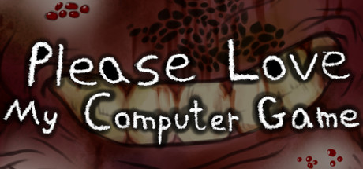

Please Love My Computer Game
Please Love My Computer Game
Details
|  | |
| Playtime | Not Played |
| Last Activity | Never |
| Added | 17/04/2020 |
| Modified | Never |
| Completion Status | Not Played |
| Source | Steam |
| Platform | PC |
| Release Date | 19/02/2018 |
| Community Score | 69 |
| Critic Score | |
| User Score | |
| Genre | Adventure Free to Play Indie Sexual Content Violent |
| Developer | Yai Gameworks |
| Publisher | Yai Gameworks |
| Feature | Cloud saves Single Player |
| Links | PCGamingWiki Community Hub Discussions Guides Store Page News |
Description
You finally left home on August 9th, 2017. You hated that place, you hated how it made you feel... And yet you closed yourself off in that unfortunate abode. Leaving was the only rational choice, but maybe it wasn't the best one. Even once you leave, scars don't simply disappear. They say time heals all wounds, but the extent of how much that can heal may be limited. Especially when it keeps being picked and torn at, when you're expected to do something, something you hate. But it lingers over you, tortures you.
I hope you love this game, I mean that sincerely. Would you please love this computer game? In the game you explore a black and white house; you can just wander, and indeed may wander for some time without really knowing what to do. But I promise you that there is depth and hidden layers here. Sometimes we want to be loved, but not want to be seen. But how can one expect to truly be loved if one also won't share oneself? Loving anything else but the true person is like loving an apparition, it's just an image of a being rather than the being themselves.
It's a sort of cryptic house exploration game about discovery, road blocks, atmosphere, love, and creation. There are things to interact with, non-linear progression, and various tough obstacles. The game may close at times, but that's not the end. It's all pretty ambiguous and not really made to be played with a single person trying to figure out what to do, more with a group or a community. I give this heed as there's a very high chance you make get stuck in a rut without much of a clue how to get further. This is natural, the game is quite cryptic and there's layers of discovery of how to make progress.
To understand the depths of love is to understand the depths of being. This game includes puzzles and atmospheric elements. In many ways it's a game that can be solved, but doesn't want to be. You could consider that a puzzle game, but it's not really about the puzzles. They're more like a defense mechanism, a shell to break through. It only takes one person to change one's life, but for better insight we often need a viewpoint outside the ourselves that two people create. I doubt any one person will be able to beat this game alone, it might take some conjuncture and cooperation. But that maybe shouldn't be surprising... How can one truly understand love if one doesn't let others in? Different people and experiences help us understand different things, and it's in that fragile act of sharing that we can open ourselves to new discoveries.
The game is cryptic and creepy, but can you still love it? Can you explore the depths and still see its good qualities? Can you even find the depths? I guess in a word this game is about discovery. If you like to discover things, then you may like this game. There's a lot to discover, and a lot of it isn't obvious. But despite not being easy or simple, I hope you will still come to love this computer game. Through all of it's roughness and unfriendly design, you can love the tender core.
For if you can love it, then maybe....
I hope you love this game, I mean that sincerely. Would you please love this computer game? In the game you explore a black and white house; you can just wander, and indeed may wander for some time without really knowing what to do. But I promise you that there is depth and hidden layers here. Sometimes we want to be loved, but not want to be seen. But how can one expect to truly be loved if one also won't share oneself? Loving anything else but the true person is like loving an apparition, it's just an image of a being rather than the being themselves.
It's a sort of cryptic house exploration game about discovery, road blocks, atmosphere, love, and creation. There are things to interact with, non-linear progression, and various tough obstacles. The game may close at times, but that's not the end. It's all pretty ambiguous and not really made to be played with a single person trying to figure out what to do, more with a group or a community. I give this heed as there's a very high chance you make get stuck in a rut without much of a clue how to get further. This is natural, the game is quite cryptic and there's layers of discovery of how to make progress.
To understand the depths of love is to understand the depths of being. This game includes puzzles and atmospheric elements. In many ways it's a game that can be solved, but doesn't want to be. You could consider that a puzzle game, but it's not really about the puzzles. They're more like a defense mechanism, a shell to break through. It only takes one person to change one's life, but for better insight we often need a viewpoint outside the ourselves that two people create. I doubt any one person will be able to beat this game alone, it might take some conjuncture and cooperation. But that maybe shouldn't be surprising... How can one truly understand love if one doesn't let others in? Different people and experiences help us understand different things, and it's in that fragile act of sharing that we can open ourselves to new discoveries.
The game is cryptic and creepy, but can you still love it? Can you explore the depths and still see its good qualities? Can you even find the depths? I guess in a word this game is about discovery. If you like to discover things, then you may like this game. There's a lot to discover, and a lot of it isn't obvious. But despite not being easy or simple, I hope you will still come to love this computer game. Through all of it's roughness and unfriendly design, you can love the tender core.
For if you can love it, then maybe....